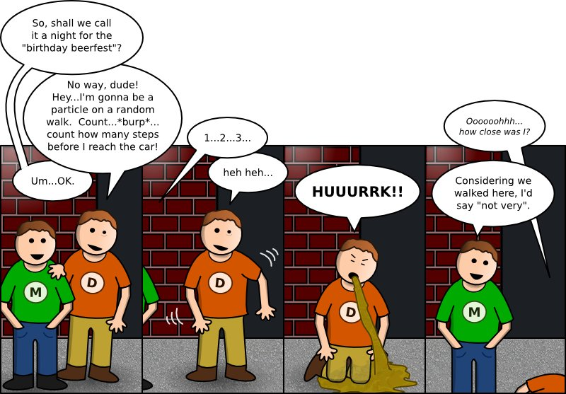

These images in no way reflect the birthday party of a certain person whose name starts with a "D". wink
Alex: I'm confused, who is D?
D: Awesome, my life is complete and I can die happy.
Mike: @Alex: Don't worry, "D" doesn't refer to who you might think. It *may* refer to a near-by friend depending on what his lawyers tell me.
Anonymous Asshole: Only way to tell is to get them both to vomit and see who makes the better HUUURRK sound.
Mike: What could make two people simultaneously vomit?
Michelle: Umm.... Ipecac? Duh, Becky!
Michelle: And who the f is "D"?
Mike: He's the spring in my step / the sugar in my tea / he's my alpha, my omega / he's the one for me!
Michelle: The only person I know that you know has a name that begins with "D" rhymes with Man, Can and Plan.
Michelle: ... there should be an 'and' in there somewhere. I'll let you figure it out!
Mike: I cannot reveal his identity. He's like Batman, except without an overly concerned butler.
Anonymous Asshole: Hey lay it off with Batman ! He is a good guy !
Bharath: Yes, we know it's always a guy that is your alpha and omega and all that Greek crap!
Anonymous Asshole: D is no Batman!
Mike: Sure he is! I've seen him battle many a villian like "The Gaussian Process" with his Matlab utility belt!
Anonymous Asshole: Batman, you sicken me.